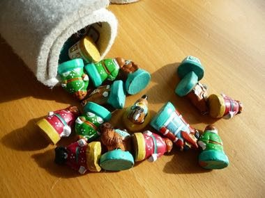

Home / Crossroads and Golden Ages / Steppe and Arctic
Encyclopedia ID 943
Mongolian chess
Монгол шатар Mongol shatar · Shatar · Shatar (Mongolian chess) · shatar


Chess variant with Mongolian piece names (noyon, bars, temee, mor, tereg, khuu); the queen moves like a rook or one step diagonally and play opens with d4/d5.
Heritage note
Part of the living heritage of Mongolia.
Origins
Usually placed in the era of Crossroads and Golden Ages (about 500 to 1500), although its exact origins are uncertain, within the cultural world of Steppe and Arctic.
Sources
Related entries

Chaturanga
India · Board and table games
Sittuyin
Myanmar · Board and table games
Banqi
China +1 · Board and table gamesChess
Armenia +3 · Board and table gamesKhmer chess
Cambodia · Board and table gamesXiangqi
China +1 · Board and table games